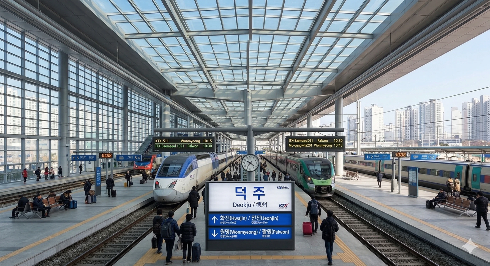

- 1. 개요
- 2. 역 정보
- 3. 승강장
- 3.1. 지상 (일반열차, 고속열차)
- 3.2. 지하 3층 (덕주 도시철도 1호선)
- 4. 일평균 이용객
- 5. 연계 교통
- 6. 기타 및 여담
1. 개요
덕빈남도의 최대 교통 거점이자 빈주시와 쌍벽을 이루는 덕주시의 관문.
덕주시 덕산구 중앙동에 위치한 한국철도공사 및 덕주도시철도공사의 철도역이다. 덕빈남도의 핵심 도시인 덕주시의 모든 철도 교통이 모이는 곳으로, 덕빈선과 매덕선이 분기하며 덕주 도시철도 1호선이 지하에서 환승된다. KTX를 포함한 모든 일반열차가 정차하여 일일 이용객이 엄청나다.
2. 역 정보
1929년 5월 30일 덕빈선 개통과 함께 영업을 개시했다. 빈주역에 비해서는 1년 늦게 개통되었지만, 그 규모와 중요성은 결코 뒤지지 않는다. 현재의 역사는 2010년 KTX 2단계 개통에 맞춰 거대하게 신축된 것으로, 전통 한옥의 처마 선을 모티브로 한 거대한 유리 지붕이 인상적이다.
역 앞 광장이 매우 넓어 선거철 유세나 대규모 집회의 단골 장소로 쓰인다. 2023년 덕주 도시철도 1호선이 개통되면서 지하에 1호선 역사가 들어섰는데, 환승 통로가 마치 거대한 미로처럼 길고 복잡하게 설계되어 있어 초행길인 승객들은 길을 잃기 일쑤다. 이 때문에 지역민들 사이에서는 '덕주 던전'이라는 악명 높은 별명으로 불린다. 환승하다 지쳐서 던킨도너츠에서 쉬어간다는 게 정설.
3. 승강장
3.1. 지상 (일반열차, 고속열차)

3면 6선의 구조로, 모든 코레일 여객 열차가 정차한다. 덕빈선과 매덕선이 갈라지는 지점이라 행선지 확인을 똑바로 하지 않으면 엉뚱한 곳으로 실려 갈 수 있다.
| 번호 | 노선 및 등급 | 행선지 |
|---|---|---|
| 1 · 2 | 덕빈선 (상행) | 화진·천조·빈주·서울 방면 |
| 3 · 4 | 매덕선 (하행 / 시종착) | 팔원·매성·운진항 방면 |
| 5 · 6 | 덕빈선 (하행) | 원명·낙주(부산) 방면 |
3.2. 지하 3층 (덕주 도시철도 1호선)

덕주역 지하 3층 깊숙한 곳에 자리한 2면 2선의 상대식 승강장이다. 코레일 역사에서 지하철역까지 이어지는 환승 통로의 길이가 악명 높다. 에스컬레이터와 무빙워크가 설치되어 있지만 워낙 멀어서 한참을 걸어야 한다.
4. 일평균 이용객
| 연도 | 일반열차/KTX | 1호선 | 총 승하차 | 비고 |
|---|---|---|---|---|
| 2022년 | 24,500명 | - | 24,500명 | 1호선 미개통 |
| 2023년 | 27,100명 | 8,500명 | 35,600명 | 1호선 개통 (하반기) |
| 2024년 | 29,800명 | 15,200명 | 45,000명 | 최신 자료 |
5. 연계 교통
🚌덕주시외버스터미널
- 역전 광장을 빠져나가 도보 3분(약 250m) 거리에 시외버스터미널이 위치해 있다. 덕빈남도 내 주요 거점과 타 도(道)로 향하는 핵심 버스 노선들이 집결한다.
🚏시내버스 및 마을버스 환승센터
역 광장 바로 앞에 대규모 버스 환승센터가 조성되어 있어 덕주시 전역으로 뻗어나가기 매우 용이하다.
| 급행/좌석 | 덕주 500(급행), 덕주 800(좌석) |
| 간선버스 | 덕주 100, 200, 300 |
| 지선/마을 | 덕산04, 덕산05, 덕주순환01 |
6. 기타 및 여담
- 덕빈북도에 빈주역이 있다면 덕빈남도에는 덕주역이 있다. 두 역은 도내 최대의 라이벌 철도역으로, 철도 갤러리 등지에서 두 역의 규모나 이용객 수를 두고 묘한 기싸움이 벌어지곤 한다. 환승 던전이라는 공통점도 가지고 있다.
-
1호선 지하역사로 내려가는 에스컬레이터의 경사가 꽤 가파르고 길어 고소공포증이 있는 사람들은 주의가 필요하다.
내려가다 보면 지하 벙커로 들어가는 기분이 든다. - 환승 통로 한가운데 떡하니 자리 잡은 던킨도너츠 매장은 전국 매출 상위권을 달린다. 지루한 환승 길에 홀린 듯 도넛과 커피를 사게 되는 마성의 입지를 자랑한다.